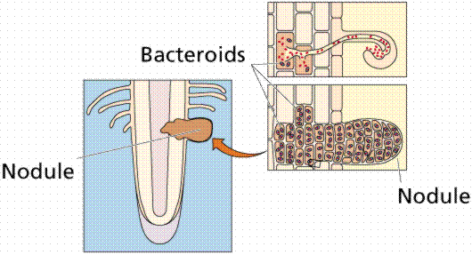

Auxins | Gibberellins | Cytokinins | Abscisic Acid | Ethylene | Plant Nutrition | Water and mineral uptake
Xylem and transport | Guard cells regulate transpiration | Transportation and storage of nutrients
Plants respond to external stimuli | Plant secondary compounds | Links
A hormone is any chemical produced in one part of the body that has a target elsewhere in the body. Plants have five classes of hormones. Animals, especially chordates, have a much larger number. Hormones and enzymes serve as control chemicals in multicellular organisms. One important aspect of this is the obtaining of food and/or nutrients
Auxins promote stem elongation, inhibit growth of lateral buds (maintains apical dominance). They are produced in the stem, buds, and root tips. Example: Indole Acetic Acid (IA). Auxin is a plant hormone produced in the stem tip that promotes cell elongation. Auxin moves to the darker side of the plant, causing the cells there to grow larger than corresponding cells on the lighter side of the plant. This produces a curving of the plant stem tip toward the light, a plant movement known as phototropism.
Auxin also plays a role in maintaining apical dominance. Most plants have lateral (sometimes called axillary) buds located at nodes (where leaves attach to the stem). Buds are embryonic meristems maintained in a dormant state. Auxin maintains this dormancy. As long as sufficient auxin is produced by the apical meristem, the lateral buds remain dormant. If the apex of the shoot is removed (by a browsing animal or a scientist), the auxin is no longer produced. This will cause the lateral buds to break their dormancy and begin to grow. In effect, the plant becomes bushier. When a gardener trims a hedge, they are applying apical dominance.
Gibberellins promote stem elongation. They are not produced in stem tip. Gibberellic acid was the first of this class of hormone to be discovered.
Cytokinins promote cell division. They are produced in growing areas, such as meristems at tip of the shoot. Zeatin is a hormone in this class, and occurs in corn (Zea ).
Abscisic Acid promotes seed dormancy by inhibiting cell growth. It is also involved in opening and closing of stomata as leaves wilt.
Ethylene is a gas produced by ripe fruits. Why does one bad apple spoil the whole bunch? Ethylene is used to ripen crops at the same time. Sprayed on a field it will cause all fruits to ripen at the same time so they can be harvested.
Unlike animals (which obrtain their food from what they eat) plants obtain their nutrition from the soil and atmosphere. Using sunlight as an energy source, plants are capable of making all the organic macromolecules they need by modifications of the sugars they form by photosynthesis. However, plants must take up various minerals through their root systems for use.
A (plant) balanced diet
Carbon, Hydrogen, and Oxygen are considered the essential elements. Nitrogen, Potassium, and Phosphorous are obtained from the soil and are the primary macronutrients. Calcium, Magnesium, and Sulfur are the secondary macronutrients needed in lesser quantity. The micronutrients, needed in very small quantities and toxic in large quantities, include Iron, Manganese, Copper, Zinc, Boron, and Chlorine. A complete fertilizer provides all three primary macronutrients and some of the secondary and micronutrients. The label of the fertilizer will list numbers, for example 5-10-5, which refer to the percent by weight of the primary macronutrients.
Soils play a role
Soil is weathered, decomposed rock and mineral (geological) fragments mixed with air and water. Fertile soil contains the nutrients in a readily available form that plants require for growth. The roots of the plant act as miners moving through the soil and bringing needed minerals into the plant roots.
Structure of soil, indicating presence of bacteria, inorganic, and organic matter, water, and air. Image from Purves et al., Life: The Science of Biology, 4th Edition, by Sinauer Associates (www.sinauer.com) and WH Freeman (www.whfreeman.com), used with permission.
Plants use these minerals in:
Plants need nitrogen for many important biological molecules including nucleotides and proteins. However, the nitrogen in the atmosphere is not in a form that plants can utilize. Many plants have a symbiotic relationship with bacteria growing in their roots: organic nitrogen as rent for space to live. These plants tend to have root nodules in which the nitrogen-fixing bacteria live.

Development of a root nodule, a place in the roots of certain plants, most notably legumes (the pea family), where bacteria live symbiotically with the plant. Images from Purves et al., Life: The Science of Biology, 4th Edition, by Sinauer Associates (www.sinauer.com) and WH Freeman (www.whfreeman.com), used with permission.
All the nitrogen in living systems was at one time processed by these bacteria, who took atmospheric nitrogen (N2) and modified it to a form that living things could utilize (such as NO3 or NO4; or even as ammonia, NH3 in the example shown below).
Pathway for converting (fixing) atmospheric nitrogen, N2, into organic nitrogen, NH3. Images from Purves et al., Life: The Science of Biology, 4th Edition, by Sinauer Associates (www.sinauer.com) and WH Freeman (www.whfreeman.com), used with permission.
Not all bacteria utilize the above route of nitrogen fixation. Many that live free in the soil, utilize other chemical pathways.

Nitrogen uptake and conversion by various soil bacteria. Images from Purves et al., Life: The Science of Biology, 4th Edition, by Sinauer Associates (www.sinauer.com) and WH Freeman (www.whfreeman.com), used with permission.
Roots have extensions of the root epidemal cells known as root hairs. While root hairs greatly enhance the surface area (hence absorbtion surface), the addition of symbiotic mycorrhizae fungi vastly increases the area of the root for absorbing water and minerals from the soil.
Role of the root hairs in increasing the surface area of roots to promote increased uptake of water and minerals from the soil. Image from Purves et al., Life: The Science of Biology, 4th Edition, by Sinauer Associates (www.sinauer.com) and WH Freeman (www.whfreeman.com), used with permission.
Animals have a circulatory system that transports fluids, chemicals, and nutrients around within the animal body. Some plants have an analogous system: the vascular system in vascular plants; trumpet hyphae in bryophytes.
Root hairs are thin-walled extensions of the epidermal cells in roots. They provide increased surface area and thus more efficient absorption of water and minerals. Water and dissolved mineral nutrients enter the plant via two routes.
Water and selected solutes pass through only the cell membrane of the epidermis of the root hair and then through plasmodesmata on every cell until they reach the xylem: intracellular route (apoplastic). Water and solutes enter the cell wall of the root hair and pass between the wall and plasma membrane until the encounter the endodermis, a layer of cells that they must pass through to enter the xylem: extracellular route (symplastic).
The paths of water into the xylem of a root. Image from Purves et al., Life: The Science of Biology, 4th Edition, by Sinauer Associates (www.sinauer.com) and WH Freeman (www.whfreeman.com), used with permission.
The endodermis has a strip of water-proof material (containing suberin) known as the Casparian strip that forces water through the endodermal cell and in such a way regulates the amount of water getting to the xylem. Only when water concentrations inside the endodermal cell fall below that of the cortex parenchyma cells does water flow into the endodermis and on into the xylem.
Details of the Casparian strip. Image from Purves et al., Life: The Science of Biology, 4th Edition, by Sinauer Associates (www.sinauer.com) and WH Freeman (www.whfreeman.com), used with permission.
Xylem is the water transporting tissue in plants that is dead when it reaches functional maturity. Tracheids are long, tapered cells of xylem that have end plates on the cells that contain a great many crossbars. Tracheid walls are festooned with pits. Vessels, an improved form of tracheid, have no (or very few) obstructions (crossbars) on the top or bottom of the cell. The functional diameter of vessels is greater than that of tracheids.
Water is pulled up the xylem by the force of transpiration, water loss from leaves. Mature corn plants can each transpire four gallons of water per week. Transpiration rates in arid-region plants can be even higher. Water molecules are hydrogen bonded to each other. Water lost from the leaves causes diffusion of additional water molecules out of the leaf vein xylem, creating a tug on water molecules along the water columns within the xylem. This "tug" causes water molecules to rise up from the roots to eventually the leaves. The loss of water from the root xylem allows additional water to pass throught the endodermis into the root xylem.
Cohesion is the ability of molecules of the same kind to stick together. Water molecules are polar, having slight positive and negative sides, which causes their cohesion. Inside the xylem, water molecules are in a long chain extending from the roots to the leaves.
Adhesion is the tendency of molecules of different kinds to stick together. Water sticks to the cellulose molecules in the walls of the xylem, counteracting the force of gravity and aiding the rise of water within the xylem.
Cohesion-Adhesion Theory
Transpiration exerts a pull on the water column within the xylem. The lost water molecules are replaced by water from the xylem of the leaf veins, causing a tug on water in the xylem. Adhesion of water to the cell walls of the xylem facilitates movement of water upward within the xylem. This combination of cohesive and adhesive forces is referred to as the Cohesion-Adhesion Theory.
In most environments, the water concentration outside the leaf is less than that inside the leaf, causing a loss of water through openings in the leaf known as stomata (singular = stoma). Guard cells are crescent-shaped cells of the epidermis that flank the stoma and regulate the size of the opening. Together, the guard cells and stoma comprise the stomatal apparatus. The inner wall of the guard cell is thicker than the rest of the wall. When a guard cell takes up potassium ions, water moves into the cell, causing the cell to become turgid and swell, opening the stoma. When the potassium leaves the guard cell, the water also leaves, causing plasmolysis of the cells, and a closing of the stoma. Stomata occupy 1% of the leaf surface, but account for 90% of the water lost in transpiration.
Ions and stomatal function. Image from Purves et al., Life: The Science of Biology, 4th Edition, by Sinauer Associates (www.sinauer.com) and WH Freeman (www.whfreeman.com), used with permission.
Plants make sugar by photosynthesis, usually in their leaves. Some of this sugar is directly used for the metabolism of the plant, some for the synthesis of proteins and lipids, some stored as starch. Other parts of the plant also need energy but are not photosynthetic, such as the roots. Food must therefore be transported in from a source, an action accomplished by the phloem tissue.
Phloem, Sugar, and Translocation
Phloem consists of several types of cells: sieve tube cells (aka sieve elements), companion cells, and the vascular parenchyma. Sieve cells are tubular cells with endwalls known as sieve plates. Most lose their nuclei but remain alive, leaving an empty cell with a functioning plasma membrane.
Companion cells load sugar into the sieve element (sieve elements are connected into sieve tubes). Fluids can move up or down within the phloem, and are translocated from one place to another. Sources are places where sugars are being produced. Sinks are places where sugar is being consumed or stored.
Food moves through the phloem by a Pressure-Flow Mechanism. Sugar moves (by an energy-requiring step) from a source (usually leaves) to a sink (usually roots) by osmotic pressure. Translocation of sugar into a sieve element causes water to enter that cell, increasing the pressure of the sugar/water mix (phloem sap). The pressure causes the sap to flow toward an area of lower pressure, the sink. In the sink, the sugar is removed from the phloem by another energy-requiring step and usually converted into starch or metabolized.
One plant response to environmental stimulus involves plant parts moving toward or away from the stimulus, a movement known as a tropism. Nastic movements are plant movements independent of the direction of the stimulus.
Alterations in Growth Patterns Generate Tropisms
Charles Darwin and his son Francis studied the familiar reaction of plants growing toward light: phototropism. The Darwins discovered that the tips of the plant curved first, and that the curve extended gradually down the stem. By covering the tips with foil, they prevented the plant from curving. They concluded that some factor was transmitted from the tip of the plant to the lower regions, causing the plant to bend.
Phototropism in the coleoptile of a monocot. Image from Purves et al., Life: The Science of Biology, 4th Edition, by Sinauer Associates (www.sinauer.com) and WH Freeman (www.whfreeman.com), used with permission.
We now know, from the 1926 experiments of Frits Went, that auxin, a plant hormone produced in the stem tip (auxins promote cell elongation), moves to the darker side of the plant, causing the cells there to grow larger than corresponding cells on the lighter side of the plant. This produces a curving of the plant stem tip toward the light, a plant movement known as phototropism.
Geotropism is plant response to gravity. Roots of plants show positive geotropism, shoots show negative geotropism. Geotropism was once thought a result of gravity influencing auxin concentration. Several new hypotheses are currently under investigation.
Geotropism. Image from Purves et al., Life: The Science of Biology, 4th Edition, by Sinauer Associates (www.sinauer.com) and WH Freeman (www.whfreeman.com), used with permission.
Germination of corn seeds occurs regardless of the seed orientation. The above image is reduced in size from gopher://wiscinfo.wisc.edu:2070/I9/.image/.bot/.130/External_Factors_and_Plant_Growth/Gravitropism/Corn%2C_+_gravitropism.
Thigmotropism is plant response to contact with a solid object. Tendrils of vines warp around objects, allowing the vine to grow upward.
Curling of a tenbdril around a metal support, an example of thigmotropism. Note the tendril of this passion flower wrapping around the metal rod. The above image is cropped and reduced from gopher://wiscinfo.wisc.edu:2070/I9/.image/.bot/.130/External_Factors_and_Plant_Growth/Thigmotropism_Passion_flower.
Nastic movements, such as nyctinasty, result from several types of stimuli, including light and touch. Legumes turn their leaves in response to day/night conditions. Mimosa , also known as the sensitive plant, has its leaves close up when touched.
Photoperiodism is the plant response to the relative amounts of light and dark in a 24 hour period, and controls the flowering of many plants. Short-day plants flower during early spring or fall, when the nights are relatively longer and the days are relatively shorter. Long-day plants flower mostly in summer, when the nights are relatively shorter and the days are relatively longer. Day-neutral plants flower without respect for the day length. Phytochrome is a plant pigment in the leaves of plants that detects the day length and generates a response.
Plants produce primary compounds important in their metabolism. They also produce secondary compounds that serve to attract pollinators, kill parasites, and prevent infectious diseases. Pea plants produce pisatin, a chemical that protects them from most strains of parasitic fungi. Some strains of the fungus (Fusarium) contain enzymes that inactivate pisatin, allowing them to infect pea plants.
Some plants produce natural insecticides, such as pyrethrum, a chemical produced by chrysanthemums that is also commercially available to gardeners. Antinutrients are chemical produced when plants are under attack. These compounds inhibit the action of enzymes in the insect's digestive system.
More that 10,000 defensive chemicals have been identified, including caffeine, phenol, tannin, nicotine, and morphine.
Some plant secondary compounds are useful to humans as
Email: mj.farabee@emcmail.maricopa.edu
Last modified:
The URL of this page is: